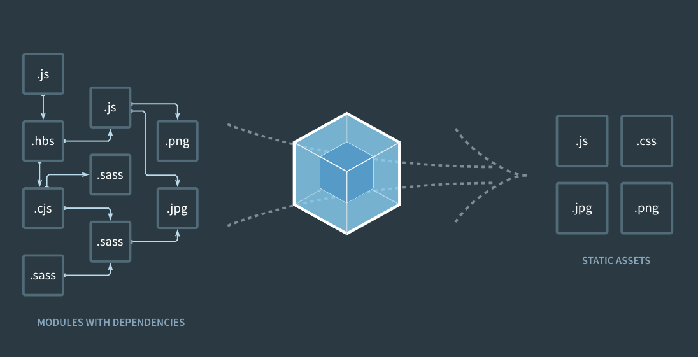

¿Qué es Parcel?
Según la web de Parcel, Parcel es un empaquetador de aplicaciones web, que se diferencia por la experiencia ofrecida a los desarrolladores. Ofrece un rendimiento ultra-rápido, utilizando procesamiento multinúcleo, y no requiere configuración.

En otras palabras, Parcel se encarga de empaquetar diferentes módulos de forma que el código pueda servirse en entornos productivos de forma compilada y minificada.
Si quieres averiguar más sobre Parcel mira el siguiente vídeo.